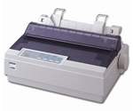

Принцип друку: друкувальна головка принтера містить вертикальний ряд тонких металевих стержнів (голок). Кількість голок, як правило, рівна 9 або 24. Кожна голка кріпиться до електромагніта. Головка рухається вздовж рядка, що друкується, а голки в потрібний момент ударяють по паперу через фарбувальну стрічку, утворюючи крапки. З цих крапок і формується зображення.
Переваги: дешевизна роздруку.
Недоліки: високий шум, повільність роботи.
